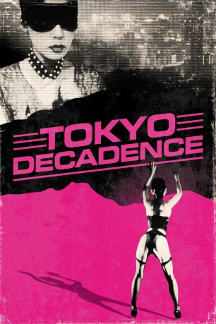

#5392 Tokio Dekadenz
Alternativ: Tokyo Decadence (Englischer Titel)
 
 IMDB-Wertung: 6.1 / 10
IMDB-Wertung: 6.1 / 10  Metascore: 0
Metascore: 0 
Die junge Edelprostituierte Ai hat sich auf Sadomasochismus spezialisiert. Sie bedient jeden Wunsch Ihrer Kunden und beobachtet, was die Männer dabei ihr und sich selbst zufügen. Dabei hofft sie auf ihrer Reise durch die perversen Triebe stets noch auf die große Liebe, die sie vor Jahren traf. Eine Wahrsagerin hat ihr vorhergesagt, dass sie ihren Geliebten eines Tages treffen wird. Dies hilft Ai, auch die größte Demütigung über sich ergehen zu lassen. Schließlich muss sie jedoch erkennen, dass der eingeschlagene Weg immer tiefer in einen Sumpf aus Drogen und Abhängigkeit führt.
Jahr: 1992
Dauer: 112 Minuten
FSK: 18
Land: Japan Studio: Kinowelt FilmverleihTonspuren:
Untertitel: Deutsch,
Auflösung: 1080p (1920x1080) Größe: 11571 MB
Genre: Drama
Regisseur: Ryû Murakami
Drehbuch: Paula Pell
Soundtrack:
Darsteller:
- Miho Nikaido als Ai
- Sayoko Amano als Saki
- Tenmei Kano als Ishioka, Mr. Satoh
- Masahiko Shimada als Suzuki
- Yayoi Kusama als Fortuneteller
- Chie Sema als Opera Woman
- Magayasu Ishihara als
- Hiroshi Mikami als
- Nami Nosaki als
- Kan Mikami als Man in Restaurant , uncredited
Datei: X:\FSK18-Erotik\Tokio Dekadenz (1992, FSK18, 1920x1080).mkv seit 25.01.2017
Festplatte: FSK18
 Es gibt insgesamt 14 Filme in der Gruppe 'FSK18-Erotik'
Es gibt insgesamt 14 Filme in der Gruppe 'FSK18-Erotik'